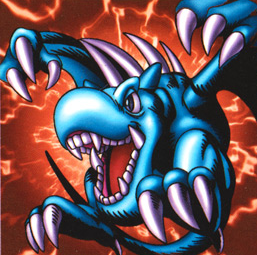

Winged Dragon, Guardian of the Fortress #1

STATS
ATK: 1400
DEF: 1200DECK COST
Deck Cost per Card: 26Fusion List (4 Possible Fusions)
- Winged Dragon, Guardian of the Fortress #1 + Claw Reacher = Koumori Dragon
- Winged Dragon, Guardian of the Fortress #1 + Harpie Lady = Harpie's Pet Dragon
- Winged Dragon, Guardian of the Fortress #1 + Kuriboh = Koumori Dragon
- Winged Dragon, Guardian of the Fortress #1 + Mystical Elf = Blackland Fire Dragon